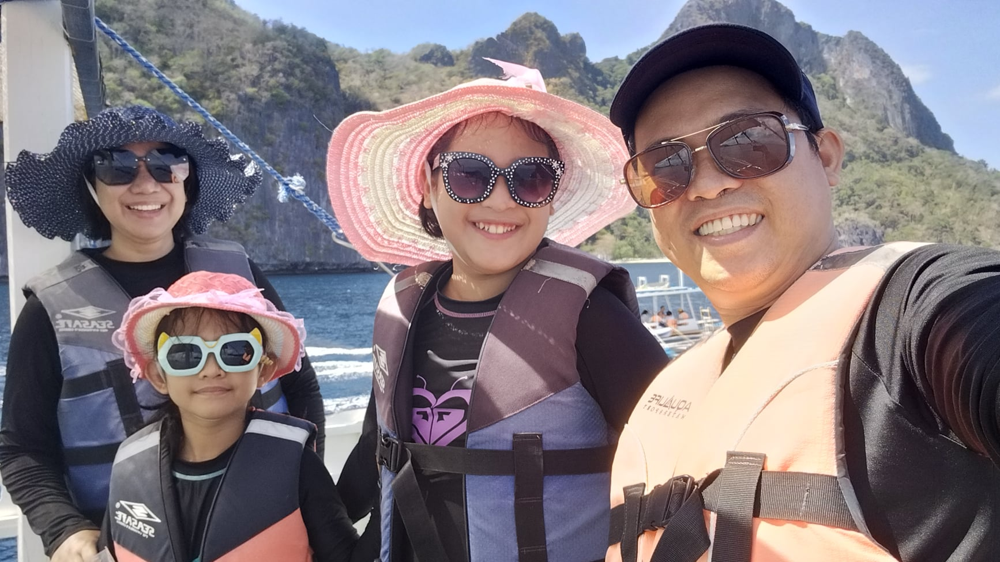

Why We Continue Homeschooling
Bert and Jen with Haniel (Grade 4) and Adiya (Grade 2) | Homeschooling Since 2020

One of the most quoted verses about parenting is found in Proverbs 22:6, “Train up a child in the way he should go and when he is old, he will not depart from it”. It is a clear instruction given to the parents and not to others, so as parents of Haniel and Adiya, we must obey God. One way of doing it is to homeschool them. Homeschooling is not only a huge commitment, but it is a calling from God.
Before I became a mother, I was inspired and encouraged by our discipleship group who are homeschooling their children and I started to pray about it. When I became a mother, I continued to pray about it. Still, unfortunately, because of fear for different reasons, we decided to enroll our firstborn child in a traditional kindergarten school. Sorry for this, but all our expectations are not met based on what they promised later on we understand that it is not their mistake but it is our responsibility to teach our child/ren. During a pandemic, it was an answered prayer that we start teaching our children little by little. Amazingly, after 2 weeks of teaching my eldest to read using DIY flashcards, she learned to read. Every day I have to read aloud different stories to my children to familiarize them with the words, the right pronunciation, and spelling. Then I was encouraged by our discipleship leader to attend a homeschool orientation and one of the sharers/speakers was Ms. Peej Caguin. Homeschooling their 3 children while they are working parents.
After this, we started looking for a homeschool provider, praying for an affordable tuition fee and God answered our prayer through my sister in DepED. She highly recommends BCI Marikina as a new homeschool provider in NCR led by Ptr. Raul Caguin. All the staff and teachers are accommodating, Teacher Liza Mañoza, always assisted us since we are all new to homeschooling. Praise God and we survived the first year of our homeschooling even though we are both working parents at the same time. Working in the daytime and homeschooling during nighttime. Believe me, tears are shed, stress is true, and pressure is there. But again, it is our calling from God that we must obey, teaching our children intentionally not only academically but also spiritually, emotionally, and many more, in every aspect of their lives.
Why do we continue to homeschool despite our tight work schedules, other responsibilities, and different activities in ministry? As the saying goes “Learning starts at home”, so we are called to teach our children the way God designed it in a family. It is not easy to homeschool but the joy and fulfillment we feel when we see the face of our children enjoying the lesson we are teaching and creating memories that our children will cherish. They feel loved because we are giving them the time they need, to be with us as their parents. As my younger daughter says when we ask her “What does she like in homeschooling?”, “I like homeschooling because I want to be with my family and to be happy. I love my Mom and Dad and Ate so much and we want to play together, walk together, and we are a happy and whole family”. And my eldest daughter answered “I like homeschooling because my Mom and Dad teach me a lot of things and they are always by my side. And they don’t only teach us Math, Filipino, English, History, and Science but also about God and they correct me when I commit mistakes or do wrong.” Homeschooling allows us to learn anywhere we want to because it has a flexible time. Learning is not only confined to the four corners of the classroom but in every part of this planet. Learning is limitless. It is not only our children who learn something but we also learn from them how to be patient and polite in answering their questions. That’s the magic of homeschooling, answering questions that only you can answer well. We manage our time as we are both working. Lessons at night then in the daytime they are answering the activities of the lesson we tackled. We are so blessed because BCI provides us with everything we need to homeschool our children.
We are appointed and chosen by God to be their teacher. We want to grow their relationship with God and with us because we want to be intentionally involved in their lives. We believe that what we are doing is not only teaching but building their character. They learn new things every day and it will have a significant effect as they grow. We love homeschooling our children until God permits us to stop and finish our mission.